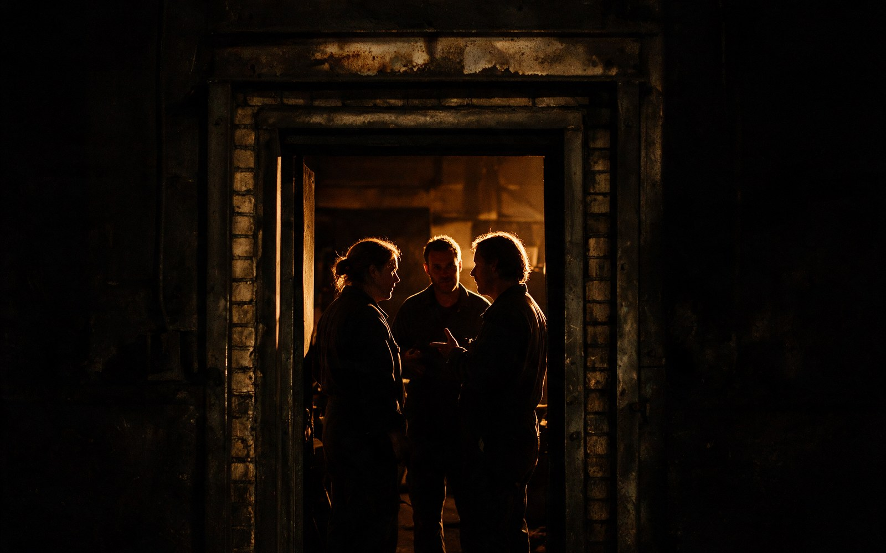

ConvergX vets every attendee at VP level or higher.
It convenes by invitation, and sets the requirements event by event.
The published admission standard
All attendees are individually vetted, VP level or higher decision makers.
Proof of ability to directly influence business direction and lead partnerships and investment is required to be considered to join ConvergX.
The standard names a title, and the proof it asks for is decision-making authority.
An owner or a founder who can sign for the company carries that authority.
Who the three days are for
Who is hereTwo kinds of people are in the room, and each one is there because of what they carry.
| Who | What they carry |
|---|---|
| People with a requirement | A live requirement their own supply base cannot fill, and a date somebody reports against. |
| People with a capability | A capability that is already commercialised and sold to a customer, rather than a concept or a prototype. |
The two are rarely in the same industry, which is why ConvergX composes the room deliberately. Industries
ConvergX decides standing separately from payment.
The boundaryA registration buys a seat in the building.
It does not buy vetted standing, an introduction, or a place on the opportunity board.
ConvergX decides each of those separately, one request at a time.
Who you are put in front of, and whether an introduction is made at all, is decided by a person at ConvergX against the room being composed for September.
Registering does not make you admitted.
A requirement with a date on it, or a capability already running somewhere, is what moves a request forward.
The door you take depends on which side of an introduction you would be standing on.

What is not published
The gaps| The question | Where it stands |
|---|---|
| How many companies ConvergX has vetted | Not published, and no figure appears anywhere on this site. |
| How many introductions it has brokered | Not published. A requirement does not leave the review it was written for. |
| Whether registering produces an introduction | It does not. That decision is made separately by a person at ConvergX. |
| The venue | Not published. The city is Calgary and the hotels are listed, but no building is named. |
Prices and totals
Three passesThree passes for Sep 22 to 24, 2026 in Calgary. Each one is admission for all three days.
What a pass does not buy is set out above, and a higher price does not change it.
Each card shows the price ConvergX publishes and the total once its admin fee and tax are added, which is the amount taken at checkout.
-
Standard
2,000 USD
Price does not include Admin Fees + Tax
Total at checkout: 2,200 USD. The 2,000 above, plus a 5 percent admin fee and 5 percent tax.
- All three days of programming
- Curated meetings and focused discussions
- Receptions and industry showcases
Checkout completes on convergx.co.
-
Military
400 USD
Price does not include Admin Fees. Tax is not applicable to this registration.
Total at checkout: 420 USD. The 400 above, plus a 5 percent admin fee. No tax applies.
- All three days of programming
- Curated meetings and focused discussions
- Receptions and industry showcases
Checkout completes on convergx.co.
-
Government
1,000 USD
Price does not include Admin Fees. Tax is not applicable to this registration.
Total at checkout: 1,050 USD. The 1,000 above, plus a 5 percent admin fee. No tax applies.
- All three days of programming
- Curated meetings and focused discussions
- Receptions and industry showcases
Checkout completes on convergx.co.
Registration is an application
ConvergX does not charge the card at checkout. It places a hold, and the payment is taken once the registration is approved.
What ConvergX asks for
The formTell ConvergX who you are and what you are bringing to Calgary.
Answer in your own words, and be specific.
Every question is required.
Where to stay
AccommodationConvergX publishes four Calgary hotels for September, and a corporate rate code that covers two of them.
Book direct with the hotel. A room is separate from a registration and is not bought here.